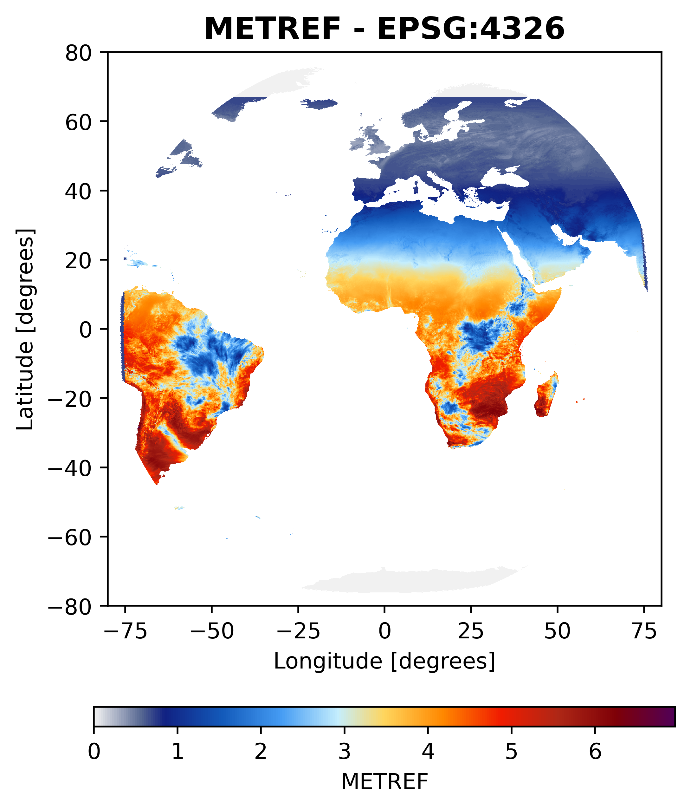
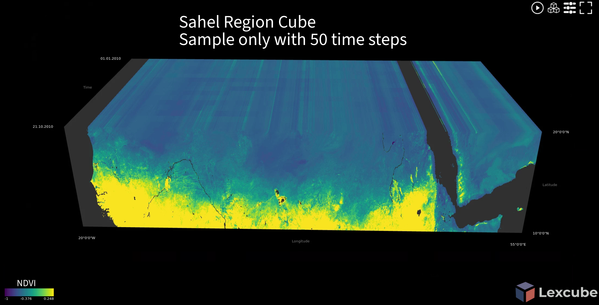
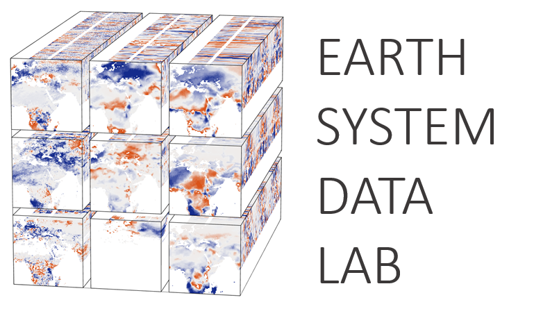

A simple workflow to download, preprocess and store LSA SAF products in a Zarr cube
2026-10-16
One month · one region · one cube
30 daily NetCDF files
1 Zarr store, compressed and chunked
1 line to open it and select by date and place
1 What is a climate cube?
2 Why build one?
3 Our approach
4 Hands-on walkthrough - WSL → download → CDO → Zarr → notebooks
5 Caveats & scaling
6 Wrap-up & resources
Dimensions, variables and the idea behind the cube
NETCDF4_…20150601.nc NETCDF4_…20150602.nc NETCDF4_…20150603.nc NETCDF4_…20150604.nc NETCDF4_…20150605.nc NETCDF4_…20150606.nc
Each file: one date, the full MSG disk (3201 × 3201), packed integers, its own metadata.
2015-06-01 2015-06-02 2015-06-03 2015-06-04 2015-06-05 2015-06-06 time → lon → lat ↑
A data cube = one grid, one time axis, named variables: METREF(time, lat, lon), quality_flag(time, lat, lon).
A data cube organises data along shared dimensions. For climate/EO variables, typically:
time="2015-06-15"), not by file.Image: tmap — geocompx


Left: what the provider delivers — one file per day.
Right: what analysis wants — a region, stacked in time.

Harmonised Earth-system variables on a common grid.
And why use a cube at all?
Climate products are useful, but files arrive with different grids, time steps, packing, metadata and quality flags.
Today we build one small, transparent path from EUMETSAT LSA SAF files to a regional data cube.
Every step leaves an output you can open and check
and every choice is written down.
Describe Standardise metadata for discovering geospatial assets.
Discover and process Access open datasets through STAC and use hosted compute.
Analyse Use a managed platform for large-scale geospatial analysis.
Store Save chunked, compressed multidimensional arrays.
Work with data Select, transform and analyse labelled arrays in Python.
| Product | What it represents | In this tutorial |
|---|---|---|
| METREF | Reference evapotranspiration (mm/day) | Default sample |
| MDFVC | Fractional vegetation cover | Second product: own URL, own folder |
Authenticated LSA SAF Data Service. Versions, units, coverage and QA differ by product — read the product page first.
What we will follow in this tutorial
☁️ LSA SAF
credentials in code/.env
→
① 01_download_sample.sh
data/raw/METREF/2015/06/
→
② 02_preprocess_cdo.sh
data/interim/METREF/…
→
③ 03_build_zarr_cube.py
data/zarr/metref_cube.zarr
→
④ notebooks + plot_utils
maps · time series · zones
Each stage writes its own folder. If something looks wrong, open the previous folder and check there.
Small first
One product, one month, one region.
Explicit
Bounds, grid, resampling and chunking are written down.
Checkable
Every stage leaves an output you can inspect.
APIs and hosted platforms (Planetary Computer, Earth Engine) are great for discovery and analysis. This workflow is the local, fully documented path for authenticated LSA SAF data — the two complement each other rather than competing.
Follow along on the tutorial site — or generate your commands with the command builder
Windows → WSL2 (once, admin PowerShell)
Every session
Keep the project in ~/, not /mnt/c/ — much faster.
code/.env is in .gitignore.
The downloader writes the password to a temporary wgetrc that is deleted on exit — it never appears in the process list or shell history.
Checkpoint: uv run python -c "import zarr; print(zarr.__version__)" → 3.x
Uses month, product and URL from code/.env.
Arguments override .env: year and month first …
… then folder name and product URL — a second product without editing .env.
2015-06: 30 file(s) on server, 30 to download -> data/raw/MDFVC/2015/06
First file: ~6s. Estimated remaining: ~0m22s with 8 parallel jobs
Done: 30 file(s) in 0m29s
JOBS = parallel downloads. Re-run any time: existing files are skipped, failed ones retried.
ENV_FILE="${ENV_FILE:-$PWD/code/.env}"
set -a; . "$ENV_FILE"; set +a
WGETRC="$(mktemp)"; export WGETRC; trap 'rm -f "$WGETRC"' EXIT
printf 'http_user=%s\nhttp_password=%s\n' "$LSASAF_USERNAME" "$LSASAF_PASSWORD" > "$WGETRC"
for d in $(seq -w 1 31); do # list every day folder of the month
list+=$(wget -q -O- "$SRC/$YEAR/$MONTH/$d/" | grep -E '\.nc$' …)
done
get() { wget -q -O "$f.part" "$1" && mv "$f.part" "$f"; } # .part → rename when complete
t0=$SECONDS; get "$(head -n1 <<< "$pending")" "$DEST" # time one file → estimate
tail -n +2 <<< "$pending" | xargs -P "$JOBS" -I{} bash -c 'get "$1" "$2"' _ {} "$DEST"showname gives you MAIN_VARIABLE and QA_VARIABLES for the next step.
Raw values are packed (int16 × scale_factor, _FillValue). xarray and CDO decode them — check that they do.
Your AOI comes from the YAML domain: or a vector file (.geojson, .gpkg, .shp, .parquet).
Its bounds rarely fall on cell edges …
… so snap_aoi_to_netcdf_grid.py expands them outward to whole raw cells, writes grid.txt and updates the YAML.
buffer (0.2°) so bilinear has neighbours at the edge.MAIN_VARIABLE is required and checked against cdo showname. uv run gives the script’s internal python3 the project packages.
Arguments: resolution label (log) · input folder · output folder per product.
cdo -sellonlatbox,$W,$E,$S,$N in.nc clip.nc # crop (+ buffer)
cdo -delname,$QA_CSV clip.nc main.nc # continuous variables
cdo -selname,$QA_CSV clip.nc qa.nc # flags
cdo -remapbil,grid.txt main.nc main_r.nc # smooth → bilinear
cdo -remapnn,grid.txt qa.nc qa_r.nc # codes → nearest, never averaged
cdo merge main_r.nc qa_r.nc merged.nc # back together
cdo -s sinfo merged.nc && mv merged.nc out.part && mv out.part out_processed.nc # only valid output landsprocessing.parallel files run at once through xargs -P; results and failures go to data/interim/METREF/cdo.log.
| Method | Typical use | Main trade-off |
|---|---|---|
| Bilinear | Continuous fields (ETo, temperature, FVC) | Smooths; can shrink extremes |
| Nearest neighbour | Categories, QA flags | Preserves classes; looks blocky |
Neither creates finer detail than the source. Choose per product, keep the QA flags, and record the choice.
Checkpoint: one *_processed.nc per raw file · no status=failed in cdo.log · cdo sinfo shows the grid.txt size
Profile : map
Files : 30 (…201506010000_processed.nc … …201506300000_processed.nc)
Variables : METREF, quality_flag
Dimensions : {'time': 30, 'lat': 91, 'lon': 121}
Inner chunk : {'time': 1, 'lat': 91, 'lon': 121} (~43.0 KB raw each)
Shard : {'time': 10, 'lat': 91, 'lon': 121}
Per variable : 30 inner chunks in 3 shard object(s)
Dry run: nothing written.Validation OK : first/last time steps match the interim NetCDF
Valid fraction : METREF=95.9%, quality_flag=100.0%
Stored size : 841.8 KB in 15 files (compression ≈ 2.3× vs 1.9 MB in memory)
uv run python code/03_build_zarr_cube.py --input data/interim/METREF --profile timeseries
uv run python code/03_build_zarr_cube.py --input data/interim/METREF --append
uv run python code/03_build_zarr_cube.py --input data/interim/METREF --variables METREF --float32
uv run python code/03_build_zarr_cube.py --input data/interim/METREF --chunks time=4,lat=64,lon=64
uv run python code/03_build_zarr_cube.py --input data/interim/METREF --workers 2 --clevel 71 layout for point time series · 2 add next month without rebuilding · 3 keep one variable, halve float64 · 4 custom chunks · 5 limit CPU, compress harder.
PROFILES = { # inner chunk shard
"map": ({"time": 1, "lat": 256, "lon": 256}, {"time": 10, "lat": 512, "lon": 512}),
"balanced": ({"time": 8, "lat": 128, "lon": 128}, {"time": 32, "lat": 512, "lon": 512}),
"timeseries": ({"time": 64, "lat": 32, "lon": 32}, {"time": 256, "lat": 256, "lon": 256}),
}
c = min(inner[dim], size) # clamp chunk to the data
k = min(round(shard[dim] / c), ceil(size / c)) # shard = whole number of chunks
inner[dim], shard[dim] = c, c * k # (Zarr v3 sharding requires this)
ds = ds.chunk(shard) # one Dask task = one whole shard
encoding[var] = {"chunks": inner, "shards": shard,
"compressors": [BloscCodec(cname="zstd", clevel=5, shuffle="shuffle")]}
ds.to_zarr(tmp, zarr_format=3, encoding=encoding, consolidated=True)import xarray as xr
ds = xr.open_zarr("data/zarr/metref_cube.zarr") # consolidated: one metadata read
day_map = ds.METREF.sel(time="2015-06-15") # by label, not by file
series = ds.METREF.sel(lon=-16.4, lat=14.5, method="nearest") # one pixel, all dates
monthly = ds.METREF.resample(time="1MS").sum() # lazy until plotted
import sys; sys.path.insert(0, "code/plot_utils")
from adaptive_cube_plot import plot_time_slices, plot_spatial_timeseries
plot_time_slices(ds, var="METREF", time_index=[0, 14, 29], boundaries=units, robust=True)
plot_spatial_timeseries(ds, var="METREF", points={"Dakar": (-17.19, 14.75)}, show_area_spread=True)1 · Validate
Quick data validation at convenience.
2 · Plot
Some quick visualisations of the cube: maps, time series, zonal stats.
3 · Application
A specific use case, if time allows, we can explore this in detail.
17 million mobility rows → one half-month read with Parquet filters= (predicate push-down).
A file that opens is not automatically fit for analysis.
What the cube does not solve
| On-the-fly (catalog + lazy loading) | Pre-built cube (this tutorial) | |
|---|---|---|
| Regridding | At read time; settings easy to overlook | Fixed once and documented |
| Compute cost | Paid at every query | Paid once, up front |
| Storage | Reuses the provider’s data | Creates a derived copy |
| Change area/grid/method | Change the query | Re-run the pipeline |
| Provider updates | Automatic | --append / rebuild |
Neither is better in general — choose by use case and always record the resampling choice.
--append; split very large areas into grid-aligned tiles with a remap margin.processing.parallel, JOBS, --workers).Do not scale only by adding workers — disk throughput, memory and object counts become the bottleneck.
A useful climate cube starts with consistent, documented choices and honest checks on missing data and resolution AND the resources.
IEEE GRSS School on EO and GeoAI for Climate-Resilient Urban Systems